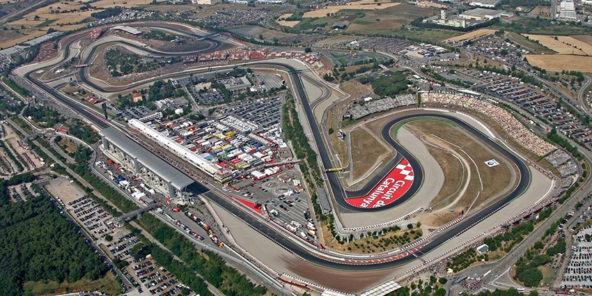
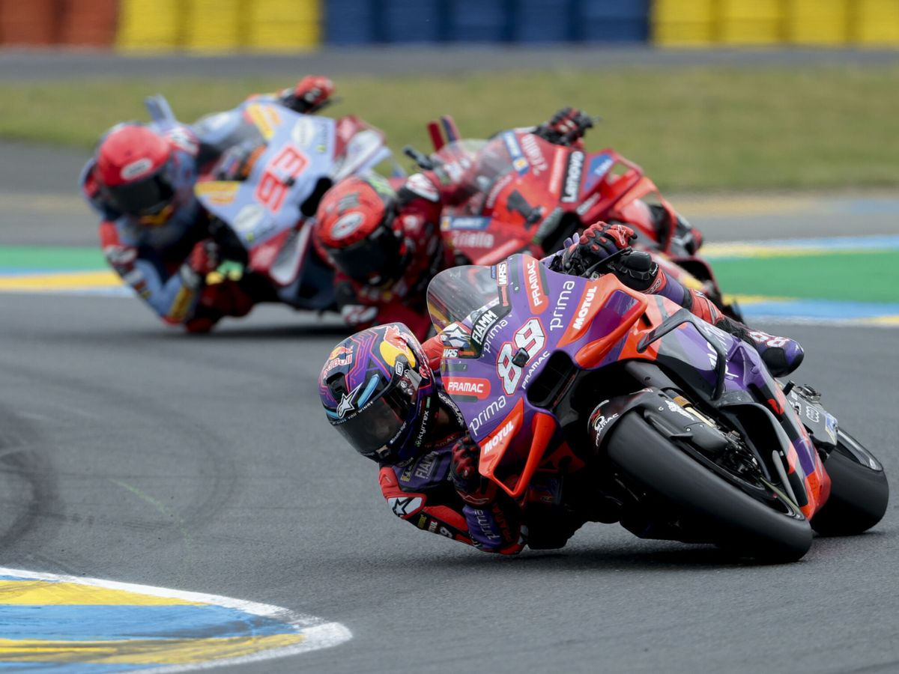
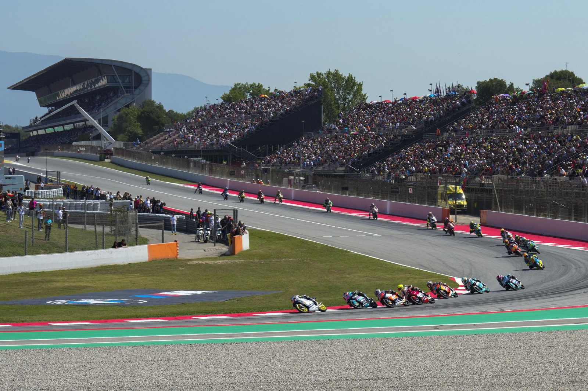

Longitud: 4657 metros
Anchura media: 12 metros
Fecha: 2025-09-07
Hora: 14:00:00
Número de vueltas: 24
Localidad próxima: Montmeló
País: España
Patrocinador: Monster Energy



Vuelta al circuito de un piloto de Honda en 2015
Recorrido narrado del circuito con una cámara GoPro
Longitud: 2.261223741459883 metros
Latitud: 41.57002141925227 grados
Altitud: 119.9815022655145 grados
Sector: 1
Álex Márquez - Duración: PT40M14.093S